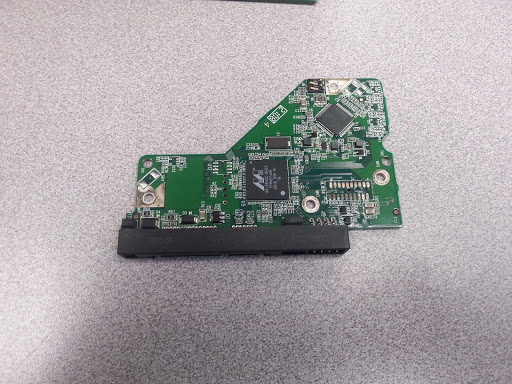

The computer below is the one we had worked on and it was an HP 2003 computer. Seeing that the computer was fairly out of date, it wouldn't have
all the new equipment and such that computers have now. We mainly had trouble with finding a diagram to help with the disassembly. You mainly have a diagram for disasembly because you would want to do it right
the first time and not get lost.
The first thing we had done to start our project was to unplug any wires,
next we had removed the Optical Disk Drive(also known as the DVD/CD Drive). The Optical disk drive allows you to burn information onto disks or to watch movies
listen to music, etc.
We had taken out the power supply. The power supply gives "life" to your computer and supplies all the energy needed
for the computer to work the way it does.
Next we had taken out the hard drive. We had also taken off the 'protector or cover' and seen the inside "disk". The hard drive
stores information obtained by your computer like any games, school work, softwares, etc. It basically works by spinning and the information get imprinted on it.
We then took out the BIOS card. The BIOS(Basic Input Output System) controls the input and output of data in your computer.
The we had to take out the video-graphics card. This controls the output of an image to your computer monitor.

After the hard drive we had removed the fan and the CPU. Along with the Heat Sink aswell. The CPU (Central Processing Unit)
receives information and carries out instructions given by the computer programs. The fan and heat sink help the CPU by keeping the computer cool.
Then the motherboard was allowed to be removed. The motherboard is where everything is held and it is the most
important part of a computer. It holds the CPU, RAM, and other important parts of the computer. Almost everything is attatched to the motherboard.
The sound was attactched to our motherboard along with an ethernet port and USB ports. This
gives access to hear sound from your computer, plug in external items such as flash drives and external hard drives and connects your computer to the internet.
The RAM was attatched to our motherboard. It is the main memory system for the computer. It mainly stores
items that can be accessed by the CPU. It basically stores data before and after it gets to the CPU to be processed.